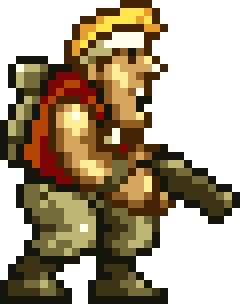
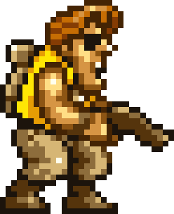

El clásico arcade de Neo Geo, directo en tu navegador.
Cargando juego…
- Sin conexión
- Mando táctil
- Save states
- 2 jugadores
- Mods
Opciones de partida
Sin ninguna marcada empiezas en la pantalla de título. Toca la misión marcada para quitarla.
Original conserva la proporción del arcade; Estirar llena toda la pantalla.
Dos jugadores en un móvil o tablet en vertical, cada uno con su mitad.
Si hay un save state, se carga automáticamente al empezar.
Mods Activa lo que quieras antes de jugar · se aplican al J1 y al J2
Acelera el procesador del Neo Geo para eliminar las ralentizaciones de las escenas con muchos enemigos. El juego mantiene su velocidad normal.
Pulsa salto otra vez en el aire para un segundo impulso.
Shift izquierdo, RB del mando o el botón táctil.
Mantén disparo pulsado para disparar sin parar.
Escenario en espejo y controles laterales invertidos. Los textos no se voltean.
Personaliza los efectos durante la partida.
Instalar en el móvilJuega a pantalla completa y sin conexión.
iPhone · Safari
Pulsa Compartir → Añadir a pantalla de inicio. Activa Abrir como app web si aparece y pulsa Añadir.
Android · Chrome
Abre ⋮ → Añadir a pantalla de inicio → Instalar.
Abre la dirección HTTPS del juego desde el teléfono. Después de la primera carga completa, puedes jugar sin conexión.
Toca un control para seleccionarlo y arrástralo para moverlo. Cada orientación conserva su propio diseño.